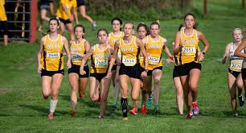

Running
I ran cross country all throughout middle school. In the middle school cross country program all courses were about 2.3 miles long. I like cross country because it is an individual sport. I also feel very accomplished after finishing a course.
Click Here To Learn More About Cross Country